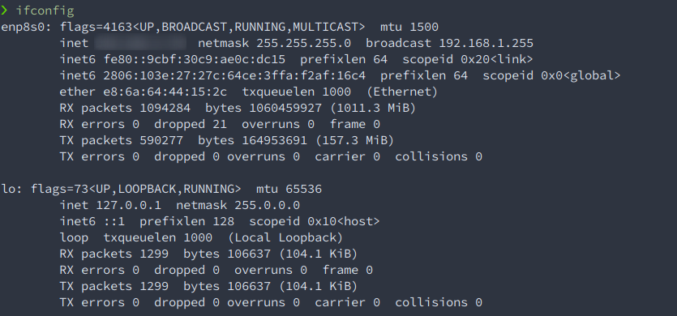

Networking
1 IP Addresses
- Trabaja dentro de la Capa 3, como los routers.

ifconfig o en windows ipconig
- La dirección IPv4 esta denotada por
inet- Escritas en binario
- Formadas por 4 octetos de unos y ceros
- para un total de 32 bits
- Valor max de 255 en cada octeto, que en binario es 11111111
- Se han agotado (IPv4 Públicas) asi que se esta haciendo el cambio a IPv6
- se usa NAT (network address translation)
- Se usa para que varias IPv4 privadas usen solo una IPv4 Pública
- IPv4 privadas: no pueden entrar a internet
- IPv4 Públicas: Si son ruteables en internet
- Ayudan a que no se acaben las IPv4 públicas
- Se usa para que varias IPv4 privadas usen solo una IPv4 Pública
- Escritas en binario
- La dirección IPv6 esta denotada por
inet6- Escitas en hexadecimal
- formadas por digitos hexadecimales
- tienen un total de 128 bits
- Escitas en hexadecimal
2 TCP, UDP, and the Three-Way Handshake
- Capa 4, capa de transporte
- TCP (Transmision Control Protocol)
- Connection oriented protocol
- Se usa cuando se necesita confiabilidad
- HTTP, FTP
- Trabaja usando el Three Way Handshake
- manda una secuencia de paquetes
- SYN -> SYN ACK -> ACK
- Los primeros dos son algo parecido a saludos y el tercero
inicia la conversación entre dos dispositivos *Hablamos de
esto en terminos de puertos.
- Un puerto es un ibjeto que nos permite tener una conversación a través de un protocolo
- Los primeros dos son algo parecido a saludos y el tercero
inicia la conversación entre dos dispositivos *Hablamos de
esto en terminos de puertos.
- SYN -> SYN ACK -> ACK
- manda una secuencia de paquetes
- UDP (User Datagram Protocol)
- Connection less protocol
- Se usa cuando se necesita velocidad y flujo constante de datos
- Streaming, DNS, VoIP ## Puertos y protocolos comunes
- TCP
- FTP (21) File transfer protocol
- SSH (22)
- Telnet (23)
- SMTP (25) mail
- DNS (53) Domain name system, Ayuda a convertir IPs a nombres
- HTTP (80) / HTTPS (443) webs
- POP3 (110) mail
- SMB (139 , 445) samba, file share
- IMAP (143) mail
- UDP
- DNS (53)
- DHCP (67,68) te asocia una IP automáiticamente
- TFTP (69) trivial FTP
- SNMP (161) Simple Network Management Protocol
3 MAC Addresses
- Esta denotada por la palabra
ether - Direcciónes físicas
- Podemos pensar en ellas como la manera en la que nos comunicamos
cuando usamos switches
- Es la manera en la que saben que dispositivo es cual.
- Podemos pensar en ellas como la manera en la que nos comunicamos
cuando usamos switches
- Trabajan en la capa 2, como los switches
- MAC (Media Access Control)
- Estan formadas por 6 pares de digitos hexadecimales.
- tienen identificadores.
- EJ:
00:0c:29:0a:42:05siendo los primeros 3 pares su identificador.- Si se buscan en un mac address lookup
- Podemos saber la marca del dispositivo.
- Si se buscan en un mac address lookup
- EJ:
3.1 El modelo OSI
PDNTSPA: Please Do Not Throw Sausage Pizza Away
- 1 - P Pysical layer Cables, Cat6 cables, etc.
- 2 - D Data layer Switching Direcciones MAC
- 3 - N Network layer Direcciones IP Routing
- 4 - T Transport layer * TCP/UDP *
- 5 - S Session layer * session management *
- 6 - P Pressentation layer * WMV, JPEG MP4 *
- 7 - A Application layer * HTTP, SMP.
Cuando mandamos algo por una red, cada paquete pasa por todas estas capas, conocerlas es útil para detectar problemas.